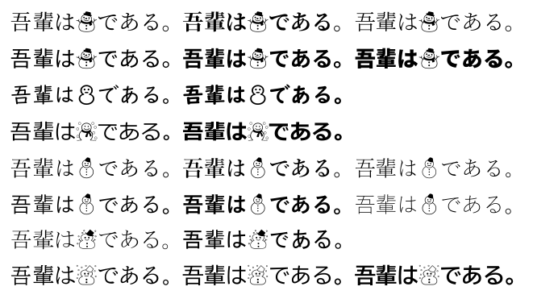

2022年12月17日
(u)pLaTeXでもっと和文多書体する話
これは「TeX ＆ LaTeX Advent Calendar 2022」の15日目の記事です。
（14日目は yi_chemist さん、16日目は zr_tex8r さんです。）
TeX ＆ LaTeX Advent Calendar 2022の15日目が埋まっていなかったので（npｱﾚの話が出てきたのでボツにした）くだらない(u)pTeX改造ネタで埋めておきます。
(u)pLaTeXで和文多書体
(u)pLaTeXで多書体化と言えばotfパッケージのdeluxeオプションですが、これで使えるようになるのはたったの3書体7ウェイトです。
もっと使える書体を増やしたいときはdoraTeXさんの「(u)pTeX における和文多書体の実現 〜Sierraの全和文フォント出力を例として〜」のようにTFM/VFを複製する方法があります。使いたい書体の数だけTFM/VFを複製して増やす必要があります。
しかし、「複製」というようにこのTFMは完全に同一ですし、VFも参照TFM名だけが違うだけで実質的に中身は同じです。同じものをたくさん複製するのはなんだかとっても資源の無駄使いに感じてしまします。
しかしこれは書体を増やすにはTFMを増やすしかないという(u)pTeXエンジンの制約なのでどうしようもありません……。
(u)pTeXでもっと和文多書体
エンジンの制約なら仕方ありません……。エンジンを改造することにしましょう！（えっ⁉）
まずTFMのほうは(u)pTeXでhoge:piyoと指定した場合はhogeとは異なるフォントとして扱いながらhoge.tfmを参照することにします。
それからDVIファイルにもhoge:piyoというファイル名で書き出されるので、DVIウェアでも同様にhoge:piyoというフォント名の時にhoge.tfmを参照するようにします。またVFについてもhoge.vfを参照することします。
さらにhoge.vfがfugaを参照していた場合は、hoge:piyoとして参照されたときはfuga:piyoに読み替えることにします。
さいごにフォントマップにfuga:piyo H piyo.ttfのような定義があれば実フォントとしてpiyo.ttfが使われるという構想です。
（(u)pTeX改造ネタなのにDVIウェアのほうが改造量が多い気がする……）
やってみた
というわけで、やってみました。
GitHub - h20y6m/tex-jp-build at texadvent2022_2
（ん？ dvips？ 知らないですねぇ……）
こんな感じでLaTeXのソースコードから好きなだけフォントを使えます。
\documentclass[uplatex,dvipdfmx]{jlreq}
\usepackage{jlreq-deluxe}
\newcommand{\jlreqtfmprefix}{u}
\NewDocumentCommand \NewJaFont { m m m }
{%
\DeclareFontFamily{JY2}{#1}{}%
\DeclareFontFamily{JT2}{#1}{}%
\DeclareFontShape{JY2}{#1}{#2}{n}{<->s*[1]\jlreqtfmprefix jlreq:#1-#2}{}%
\DeclareFontShape{JT2}{#1}{#2}{n}{<->s*[1]\jlreqtfmprefix jlreq-v:#1-#2}{}%
\AtBeginDvi{%
\special{pdf:mapline uprml-h:#1-#2 UniJIS2004-UTF16-H #3}%
\special{pdf:mapline uprml-hq:#1-#2 UniJIS-UCS2-H #3}%
\special{pdf:mapline uprml-v:#1-#2 UniJIS2004-UTF16-V #3}%
}%
}
\NewJaFont{kyo}{m}{:0:UDDigiKyokashoN-R.ttc}
\NewJaFont{kyo}{b}{:0:UDDigiKyokashoN-B.ttc}
\NewJaFont{mei}{m}{:0:meiryo.ttc}
\NewJaFont{mei}{b}{:0:meiryob.ttc}
\NewJaFont{yum}{l}{yuminl.ttf}
\NewJaFont{yum}{m}{yumin.ttf}
\NewJaFont{yum}{b}{yumindb.ttf}
\NewJaFont{yug}{l}{:0:YuGothL.ttc}
\NewJaFont{yug}{m}{:0:YuGothM.ttc}
\NewJaFont{yug}{b}{:0:YuGothB.ttc}
\NewJaFont{msm}{m}{:0:msmincho.ttc}
\NewJaFont{msg}{m}{:0:msgothic.ttc}
\NewJaFont{bizm}{m}{:0:BIZ-UDMinchoM.ttc}
\NewJaFont{bizg}{m}{:0:BIZ-UDGothicR.ttc}
\NewJaFont{bizg}{b}{:0:BIZ-UDGothicB.ttc}
\NewDocumentCommand \kyofamily {} {\kanjifamily{kyo}\selectfont}
\NewDocumentCommand \meifamily {} {\kanjifamily{mei}\selectfont}
\NewDocumentCommand \yumfamily {} {\kanjifamily{yum}\selectfont}
\NewDocumentCommand \yugfamily {} {\kanjifamily{yug}\selectfont}
\NewDocumentCommand \msmfamily {} {\kanjifamily{msm}\selectfont}
\NewDocumentCommand \msgfamily {} {\kanjifamily{msg}\selectfont}
\NewDocumentCommand \bizmfamily{} {\kanjifamily{bizm}\selectfont}
\NewDocumentCommand \bizgfamily{} {\kanjifamily{bizg}\selectfont}
\begin{document}
{\mcfamily 吾輩は☃である。\bfseries 吾輩は☃である。\ltseries 吾輩は☃である。}\par
{\gtfamily 吾輩は☃である。\bfseries 吾輩は☃である。\ebseries 吾輩は☃である。}\par
{\kyofamily 吾輩は☃である。\bfseries 吾輩は☃である。}\par
{\meifamily 吾輩は☃である。\bfseries 吾輩は☃である。}\par
{\yumfamily 吾輩は☃である。\bfseries 吾輩は☃である。\ltseries 吾輩は☃である。}\par
{\yugfamily 吾輩は☃である。\bfseries 吾輩は☃である。\ltseries 吾輩は☃である。}\par
{\msmfamily 吾輩は☃である。\msgfamily 吾輩は☃である。}\par
{\bizmfamily 吾輩は☃である。\bizgfamily 吾輩は☃である。\bfseries 吾輩は☃である。}\par
\end{document}

まとめ
WEB言語とか（C言語とか）しましょう！